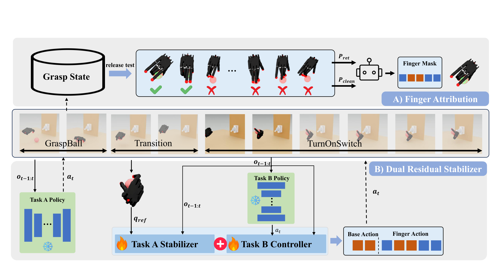
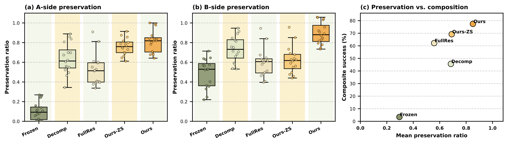
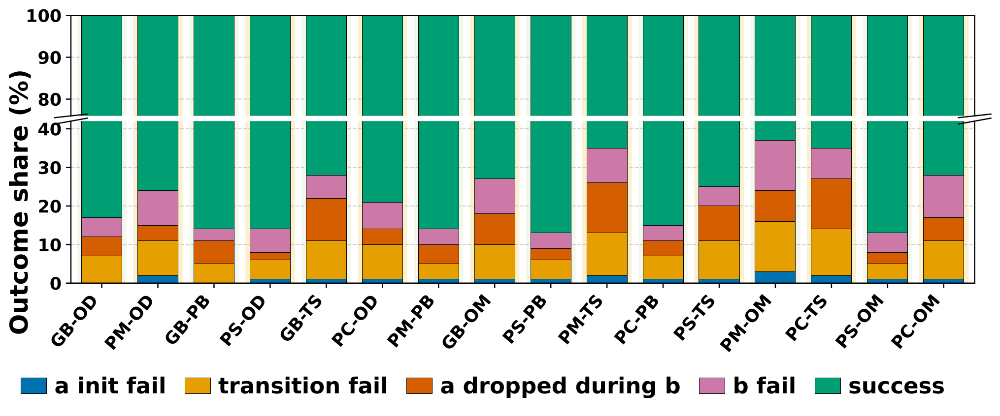

Abstract
Dexterous manipulation policies can solve individual skills, but composing them to perform multiple tasks with a single hand remains difficult. Different tasks often compete over the same action dimensions, causing destructive interference between preserving an existing manipulation outcome and executing a new one. We propose DexCompose, a role-aware residual composition framework that enables the reuse of pretrained dexterous policies through explicit finger-level action ownership.
Given two pretrained full-hand policies, DexCompose first collects successful post-task states from the first skill and performs release tests over candidate finger masks to estimate which fingers are necessary for maintaining the established held state. It then trains a bounded residual stabilizer for task preservation and a context-aware residual that adapts the frozen downstream policy only within the action subspace assigned to the new task.
We evaluate the framework on 16 composite dexterous manipulation tasks spanning four object-retention skills and four downstream interactions. Our method achieves 77.4% average composite success, and ablation studies confirm that structural action ownership combined with dual asymmetric residuals is more effective than conventional policy chaining or unmasked residual correction.
Method
DexCompose treats policy composition as an action allocation problem at the embodiment level. The framework discovers which fingers must preserve Task A, releases redundant fingers for Task B, and composes the two frozen policies using residual modules that are restricted to their assigned action subspaces.

Finger Attribution
Successful Task-A hold states are replayed while candidate finger subsets are released. Retention and clean-release diagnostics identify which fingers can be reassigned without losing the held object.
Action Ownership
The selected finger mask defines disjoint action subspaces: Task A controls preserved fingers, while Task B controls the wrist and released fingers.
Dual Residual Stabilizer
A bounded Task-A residual preserves the held state, and a Task-B residual adapts the downstream policy under the constraints imposed by the maintained grasp.
Results
Experiments are conducted in Isaac Lab with a Shadow Hand. Task A contains four object-retention skills: GraspBall, PourMug, PickCan, and PickStick. Task B contains four downstream interactions: OpenDoor, PushButton, OpenMicrowave, and TurnOnSwitch. A rollout succeeds only when the Task-A object remains retained and Task B is completed.
| Method | Mean Composite Success | Role in Comparison |
|---|---|---|
| Frozen Grasp | 3.09 +/- 0.72 | Sequential execution with frozen grasp-maintaining fingers |
| Decomposed Action Space | 45.61 +/- 1.94 | Fixed subspace split without release-test validation |
| Residual Learning | 61.60 +/- 2.31 | Unmasked residual correction over the combined policy |
| Ours-ZS | 69.23 +/- 1.60 | Finger allocation and Task-A stabilizer without Task-B residual |
| DexCompose | 77.43 +/- 2.64 | Finger attribution, action ownership, and dual residual stabilization |

Ablations and Diagnostics
Component ablations show that the Task-A residual is essential for preserving the first manipulation outcome. Finger allocation and action masking reduce cross-task interference, while the Task-B residual and transition stage further improve execution robustness.
| Variant | Mean Success | Interpretation |
|---|---|---|
| DexCompose | 77.43 +/- 2.64 | Full method |
| Ours-ZS | 69.23 +/- 1.60 | Removes Task-B residual |
| -Finger | 54.52 +/- 2.09 | Removes finger allocation |
| -Task-A | 9.13 +/- 1.29 | Removes Task-A residual stabilizer |
| -Mask | 59.13 +/- 1.75 | Removes action masking |
| -Trans. | 69.02 +/- 2.07 | Removes transition stage |

Paper
BibTeX
@misc{dexcompose2026,
title={DexCompose: Reusing Dexterous Policies for Multi-Task Manipulation with a Single Hand},
author={Anonymous Authors},
year={2026},
note={Manuscript under review}
}